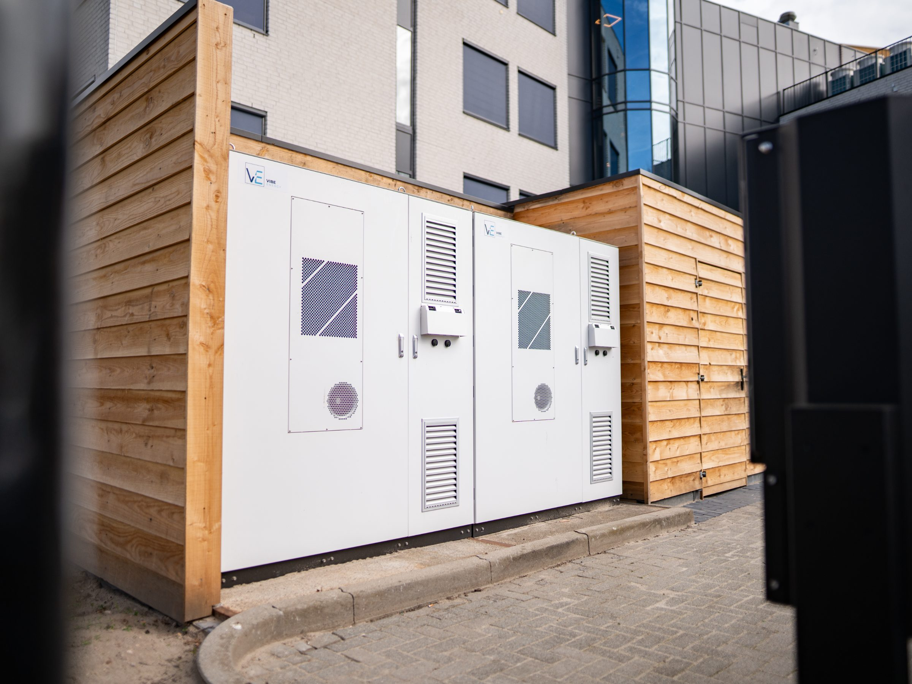

Veel organisaties wekken energie op wanneer ze die niet nodig hebben en komen juist tekort op piekmomenten. Met industriële batterijopslag van Vibe gebruikt u energie wanneer die de meeste waarde heeft — lagere energiekosten, minder piekbelasting en optimaal gebruik van uw bestaande aansluiting.
Uw zonnepanelen leveren overdag, terwijl uw verbruik juist 's avonds en 's nachts piekt. Die pieken zijn duur, uw eigen opwek blijft onbenut en uw aansluiting zit precies op het verkeerde moment vol.
Uw zon levert overdag, de vraag piekt 's avonds. Zonder buffer gaat die energie verloren.
Eigen verbruik laagVermogenpieken jagen uw energiekosten omhoog en vallen vaak samen met de duurste momenten.
Naheffing op transportTe ruim voor de basislast, te krap op de piek — en verzwaren duurt jaren of kan niet.
Groei geblokkeerdU slaat energie op wanneer die goedkoop of overvloedig is en gebruikt haar wanneer ze het meeste oplevert — zonder piekbelasting en met optimaal gebruik van uw aansluiting. Daarvoor is batterijopslag nodig. De batterij is de motor van uw energiesysteem: slim gestuurd op capaciteit, prijs, eigen verbruik en leveringszekerheid tegelijk.
— Eén systeem. Van ontwerp tot beheer.
Dezelfde batterij, door het EMS ingezet voor vier waardestromen tegelijk — afhankelijk van het moment.
De accu vangt vermogenpieken op en houdt de aansluiting binnen contract.
Zon van overdag wordt 's avonds benut in plaats van teruggeleverd tegen lage prijs.
Laden bij lage prijs, ontladen bij hoge — één cyclus per dag op de markt.
Bij uitval of schaarste levert de accu door — bedrijfszekerheid als bonus.
Vermogenpieken opgevangen — voorkomt naheffing op transporttarief en houdt de aansluiting binnen contract.
N=12 locaties · 2024Per kWh capaciteit per jaar bij één volle cyclus per dag op spotprijs — bovenop peak-shaving.
EPEX spot · historischRestcapaciteit na 10 jaar, contractueel gegarandeerd en jaarlijks gemeten via het EMS.
10 jr · 6.000+ cycliVan opdracht tot live: levering, plaatsing, commissioning en koppeling met het EMS.
100–1.000 kWh rangeDe juiste sizing volgt uit uw kwartiersprofiel — die rekenen we per locatie door.
Stel uw vraagWij analyseren uw energieverbruik, piekbelasting en groeiplannen en berekenen welke opslagoplossing het meeste rendement oplevert.